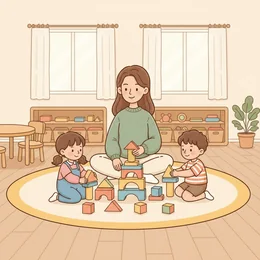

deutschoderwas · Sprechclub · Woche 1 · Strang C · Teil 1 · Montag, 14. September
Handy am Esstisch — geht das?
In manchen Familien liegt es neben dem Teller, in anderen kommt es in eine Kiste. Heute sammeln wir die Wörter — am Mittwoch wird gestritten.
Gleiches Thema, andere Sätze. B1 sagt die Regel, B2 begründet und schränkt ein.
Erst mal ankommen
Zwei Runden. Erst reihum, dann zu zweit. Ein Satz genügt.
Runde 1 · reihum, ein Satz pro Person
Liegt dein Handy beim Essen auf dem Tisch?
Gibt es bei euch zu Hause Regeln dafür?
Wann darf man ans Handy gehen, auch wenn man am Tisch sitzt?
Ist es eine Frage der Höflichkeit oder der Gewohnheit — und wo ist der Unterschied?
Gelten für Kinder und Erwachsene dieselben Regeln? Sollten sie?
Was verändert sich in einem Gespräch, sobald ein Handy sichtbar auf dem Tisch liegt?
🗣️ Sprecht reihum: „Bei uns zu Hause …“ · „Was mich stört, ist …“ · „Eine Ausnahme mache ich, wenn …“
Runde 2 · zu zweit, fragt euch gegenseitig
Merkst du, wenn dir jemand nur halb zuhört? Woran?
Wie war das vor dem Handy — gab es da andere Störungen bei Tisch?
Wer setzt in einer Familie die Regeln: die Eltern, alle zusammen, oder niemand?
👀 Zu zweit, eine Minute: Einer erzählt etwas, der andere schaut zwischendurch zweimal aufs Handy. Danach sagt der Erzähler, wie es sich angefühlt hat. Dann tauschen.
🆘 Wie fange ich an?
Bei mir war das so: …Ich habe einmal …Ich glaube, das ist …
Bei mir war das so: …Ehrlich gesagt habe ich das noch nie …Mir fällt spontan ein Fall ein, in dem …
Vier Gespräche — zwei Runden
1Runde 1: Lest den Dialog zu zweit laut.
2Runde 2: Auf den Knopf tippen — B verschwindet, und ihr antwortet selbst.
3Die Regieanweisung bleibt als Hilfe stehen.
Dialog 1 · „Die neue Regel“
Abendessen. Zum ersten Mal soll das Handy in die Kiste.
A
Warum muss mein Handy jetzt plötzlich in eine Kiste?
B
Weil wir uns wenigstens einmal am Tag richtig unterhalten wollen.
🗣️ Nenn den Grund, nicht die Regel. Der Grund überzeugt, die Regel nicht.tippen = Hilfe zeigen
A
Ich höre doch zu. Ich schaue nur kurz.
B
Das glaube ich dir. Trotzdem merkt man am Tisch sofort, wenn jemand nur halb da ist.
🗣️ Nimm es an und beschreib die Wirkung — nicht die Absicht.tippen = Hilfe zeigen
A
Und wenn Papa was Wichtiges kriegt?
B
Im Notfall geht natürlich jeder ran. Aber die Regel gilt für alle, auch für uns.
🗣️ Lass die Ausnahme zu und zieh die Regel sofort auf alle.tippen = Hilfe zeigen
A
Okay. Aber dann auch wirklich alle.
Dialog 2 · „Beim Essen mit Freunden“
Ihr sitzt zu viert im Restaurant. Einer tippt seit zehn Minuten.
A
Moment, ich muss das noch schnell beantworten.
B
Klar. Sag Bescheid, wenn du wieder da bist.
🗣️ Bleib freundlich — und mach mit einem Satz sichtbar, dass es auffällt.tippen = Hilfe zeigen
A
Ist ja nur kurz. Was habt ihr gerade erzählt?
B
Nichts Dramatisches. Mich stört es ehrlich gesagt trotzdem ein bisschen.
🗣️ Sag es ehrlich, mit „mich stört“ statt „du bist“.tippen = Hilfe zeigen
A
Oh. Das war nicht so gemeint.
B
Weiß ich. Deswegen sage ich es ja — damit du weißt, wie es hier ankommt.
🗣️ Trenn Absicht und Wirkung.tippen = Hilfe zeigen
A
Ich leg's weg. Erzähl noch mal von vorn.

Dialog 3 · „Beim Elternabend“
In der Kita wird über Bildschirmzeit gesprochen. Die Meinungen gehen auseinander.
A
Ich finde, unter sechs sollte gar kein Bildschirm sein.
B
Das verstehe ich. Bei uns funktioniert eine feste Zeit besser als ein Verbot.
🗣️ Stimm zuerst zu, dann beschreib deine eigene Lösung.tippen = Hilfe zeigen
A
Aber Kinder halten sich doch nicht an Zeiten.
B
Unsere schon — weil wir uns selbst daran halten. Das ist der ganze Trick.
🗣️ Nenn das Vorbild als Argument, ohne zu belehren.tippen = Hilfe zeigen
A
Da haben Sie wahrscheinlich recht.
B
Wir haben es einfach vier Wochen ausprobiert. Vielleicht wäre das auch für Sie etwas.
🗣️ Mach einen kleinen, konkreten Vorschlag statt einer Empfehlung.tippen = Hilfe zeigen
Dialog 4 · „Der eigene Bildschirm“
Sonntagabend. Die Bildschirmzeit-Meldung kommt aufs Handy.
A
Fünf Stunden am Tag. Steht hier schwarz auf weiß.
B
Bei mir sind es auch über vier. Und ich weiß gar nicht, womit.
🗣️ Sei ehrlich statt beschönigend. Das öffnet das Gespräch.tippen = Hilfe zeigen
A
Sollen wir mal was ändern?
B
Ich würde gern abends ab neun ganz abschalten. Machst du mit?
🗣️ Mach einen konkreten Vorschlag mit Uhrzeit und lade ein.tippen = Hilfe zeigen
A
Ab neun ist hart. Ab zehn?
B
Einigen wir uns auf halb zehn. Vier Wochen, dann schauen wir.
🗣️ Triff die Mitte und setz eine Frist.tippen = Hilfe zeigen
A
Abgemacht.
🎭 Und jetzt ihr: Spielt Dialog 1 noch einmal — aber diesmal ist B das Kind und A der Elternteil, der die Regel selbst nicht einhält. Wie geht das aus?
Sätze, die sitzen müssen
Sag jeden einmal laut.
1 · 📜 Die Regel nennen
Bei uns gilt: …
Beim Essen darf niemand …
Wir haben abgemacht, dass …
2 · 🧱 Begründen
… weil wir uns unterhalten wollen.
Der Grund ist einfach: …
Sonst hört niemand mehr zu.
3 · ⚠️ Ausnahme zulassen
Im Notfall natürlich schon.
Wenn jemand krank ist, …
Da machen wir eine Ausnahme.
4 · 🤝 Durchsetzen
Das gilt für alle.
Auch für mich.
Leg es bitte weg.
1 · 📜 Die Regel als Absprache
Wir haben uns darauf verständigt, dass …
Es hat sich bei uns eingebürgert, dass …
Bei uns ist es üblich, dass …
2 · 🧱 Mit Wirkung begründen
Dadurch, dass …, kommen wir überhaupt ins Gespräch.
Sonst führt das dazu, dass …
Es geht nicht ums Gerät, sondern um …
3 · ⚠️ Die Ausnahme vorwegnehmen
Selbstverständlich mit Ausnahme von …
Ausgenommen sind Notfälle.
Das schließt … nicht aus.
4 · 🤝 Ohne Machtwort durchsetzen
Die Regel gilt für alle, sonst funktioniert sie nicht.
Ich halte mich selbst daran.
Wollen wir es vier Wochen ausprobieren?
✅ Und jetzt zu zweit: Deckt die Sätze zu. Einer nennt den Schritt, der andere sagt den Satz aus dem Kopf. Danach tauschen.
⏱️ Die 90-Sekunden-Challenge
Ein Wort, anderthalb Minuten, freies Sprechen. Beschreibe die Regel, den Grund und die Ausnahme.
Dein Wort
der Esstisch
1:30
Vier Schritte, dann trägt sich die Zeit von selbst:
1. Wie ist es bei euch zu Hause geregelt?
2. Wer hat das entschieden — und wie?
3. Hält sich jeder daran? Auch die Erwachsenen?
4. Was würdest du ändern, wenn du allein entscheiden könntest?
Und wenn ein Wort fehlt: beschreib es. „Die Zeit, die man vor dem Bildschirm verbringt“ ist besser als eine Pause.
⏱️ Spielregel: In jeder Runde müssen zwei verschiedene Modalverben vorkommen. Die Gruppe hört mit und sagt hinterher, welche es waren.
🎭 Drei Regelgespräche
1Zu zweit. Einer will eine Regel, einer nicht.
2Zwei Minuten, dann tauschen — auch die Position.
1Die Handykiste
A
will, dass alle Geräte beim Essen weggelegt werden.
B
findet das übertrieben.
Sätze, die dir helfen
Bei uns soll gelten: …Der Grund ist …Im Notfall natürlich schonDas gilt für alle
Wir haben uns darauf verständigt, dass …Es geht nicht ums Gerät, sondern um …Notfälle sind ausgenommenWollen wir es vier Wochen ausprobieren?
🎯 Geschafft, wennA nennt zuerst den Grund und erst dann die Regel — und lässt die Ausnahme selbst zu, bevor B danach fragt.
🆘 Und wenn B nein sagt?
Das verstehe ich. Aber …Kann ich bitte fragen: …?Was kann ich jetzt machen?
Das verstehe ich — trotzdem bleibe ich dabei: …Darf ich kurz nachfragen: …?Wer kann das denn entscheiden?
2Der Freund am Tisch
A
tippt beim gemeinsamen Essen ständig.
B
will es ansprechen, ohne den Abend zu verderben.
Sätze, die dir helfen
Es stört mich, wenn …Ich sage es lieberWar nicht so gemeintIch leg's weg
Bei mir kommt an, dass …Ich unterstelle dir nichtsAbsicht und Wirkung sind zwei DingeDanke, dass du es sagst
🎯 Geschafft, wennB sagt „mich stört“ statt „du bist“ — und A reagiert, ohne sich zu verteidigen.
🆘 Und wenn B nein sagt?
Das verstehe ich. Aber …Kann ich bitte fragen: …?Was kann ich jetzt machen?
Das verstehe ich — trotzdem bleibe ich dabei: …Darf ich kurz nachfragen: …?Wer kann das denn entscheiden?
3Elternabend
Die LageA ist für ein striktes Bildschirmverbot bis sechs, B für feste Zeiten. Findet eine gemeinsame Empfehlung.
Sätze, die dir helfen
Ich finde, dass …Bei uns funktioniert …Das verstehe ichProbieren wir es aus
Ich vertrete die Auffassung, dass …Ein Verbot verlagert das Problem nurKinder machen nach, was sie sehenEinigen wir uns auf …
🎯 Geschafft, wennBeide stimmen der Gegenseite in einem Punkt zu — und am Ende steht ein Vorschlag mit Frist statt eines Grundsatzstreits.
🆘 Und wenn B nein sagt?
Das verstehe ich. Aber …Kann ich bitte fragen: …?Was kann ich jetzt machen?
Das verstehe ich — trotzdem bleibe ich dabei: …Darf ich kurz nachfragen: …?Wer kann das denn entscheiden?
🎴 Sprechkarten
Zieh eine Karte. Vier Sätze am Stück.
Deine Aufgabe
Tippe auf den Knopf.
Drei gegen drei
Zwei Gruppen, eine Frage. Abwechselnd sprechen.
Am Esstisch bleibt das Handy weg.
Gruppe A · dafür
Wer aufs Handy schaut, sagt: Etwas anderes ist wichtiger.
Beim Essen sind alle mal zusammen. Sonst nie.
Schon ein Handy auf dem Tisch macht das Gespräch flacher.
Gruppe B · dagegen
Manche haben Bereitschaft oder kranke Eltern.
Nach dem Essen sitzen alle wieder am Bildschirm.
Manchmal braucht man es: ein Foto, ein Rezept, eine Adresse.
Zum Schluss
Ein Satz von jedem.
Welchen Satz von heute nimmst du mit — und wo brauchst du ihn?
🆘 Wie fange ich an?
Ich nehme mit: …Ich will den Satz „…“ benutzen.Neu war für mich: …
Ich nehme mit, dass …Den Satz „…“ will ich nächste Woche wirklich benutzen.Neu war für mich, dass …
📮 Deine Hausaufgabe bis Mittwoch
Vier kleine Aufgaben, zusammen etwa 25 Minuten. Tippe eine an, wenn du sie geschafft hast.
💡 Warum das hilft: Am Mittwoch wird debattiert. Wer heute den Wortschatz und die Modalverben sitzen hat, kann sich dort auf die Argumente konzentrieren.
0 von 0 Aufgaben geschafft.
So sieht der Unterschied aus:
„Du darfst nicht ans Handy gehen.“ → Es ist verboten.
„Du musst nicht ans Handy gehen.“ → Es ist nicht nötig, aber erlaubt.
„Du sollst nicht ans Handy gehen.“ → Jemand erwartet, dass du es lässt.
„Du kannst nicht rangehen.“ → Es geht nicht, kein Empfang.
Der wichtigste Satz: „musst nicht“ ist eine Erlaubnis, kein Verbot.
Dieselbe Regel in drei Registern:
Familie: „Beim Essen kommen die Handys in die Kiste — bei uns allen.“
Büro-Aushang: „Wir bitten darum, während der Besprechung auf mobile Geräte zu verzichten.“
Hausordnung: „Die Nutzung mobiler Endgeräte ist während der gemeinsamen Mahlzeiten untersagt. Ausgenommen sind Notfälle.“
Nach oben wandern die Verben ins Nomen: aus wir legen weg wird die Nutzung ist untersagt. Und die Ausnahme steht immer im letzten Satz.
📬 Abgabe: Schick deine Sprachnachricht bis Mittwoch 16 Uhr in die Gruppe. Wir hören zwei davon gemeinsam an — freiwillig, versteht sich.
🔜 Am Mittwoch, Teil 2: die Debatte. Zwei Lager, feste Redemittel, und am Ende stimmt die Gruppe ab. Bring dein stärkstes Argument mit.